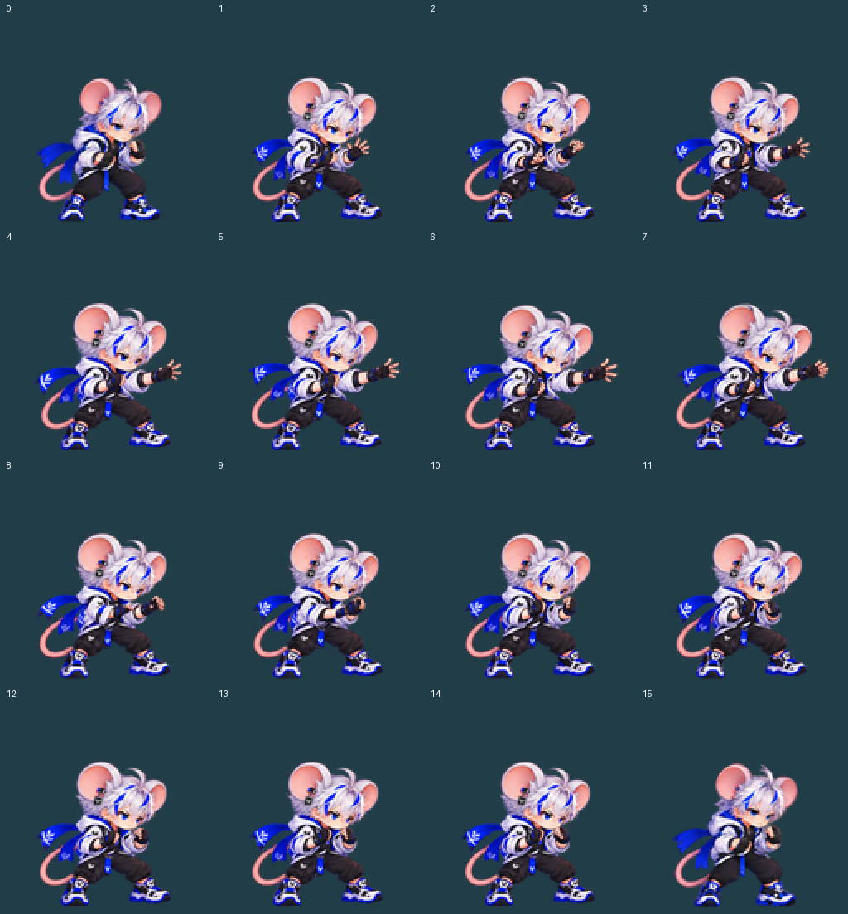
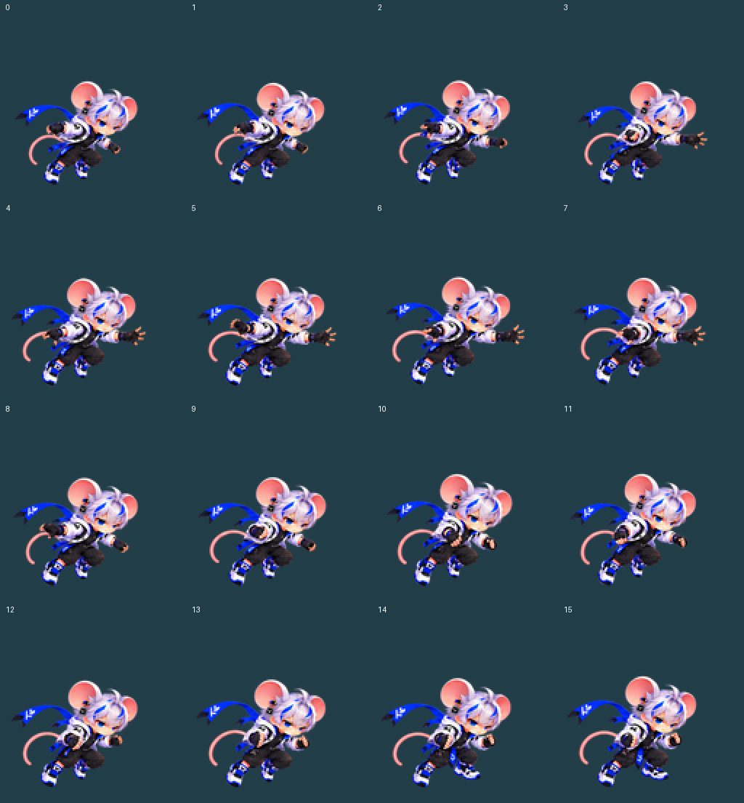
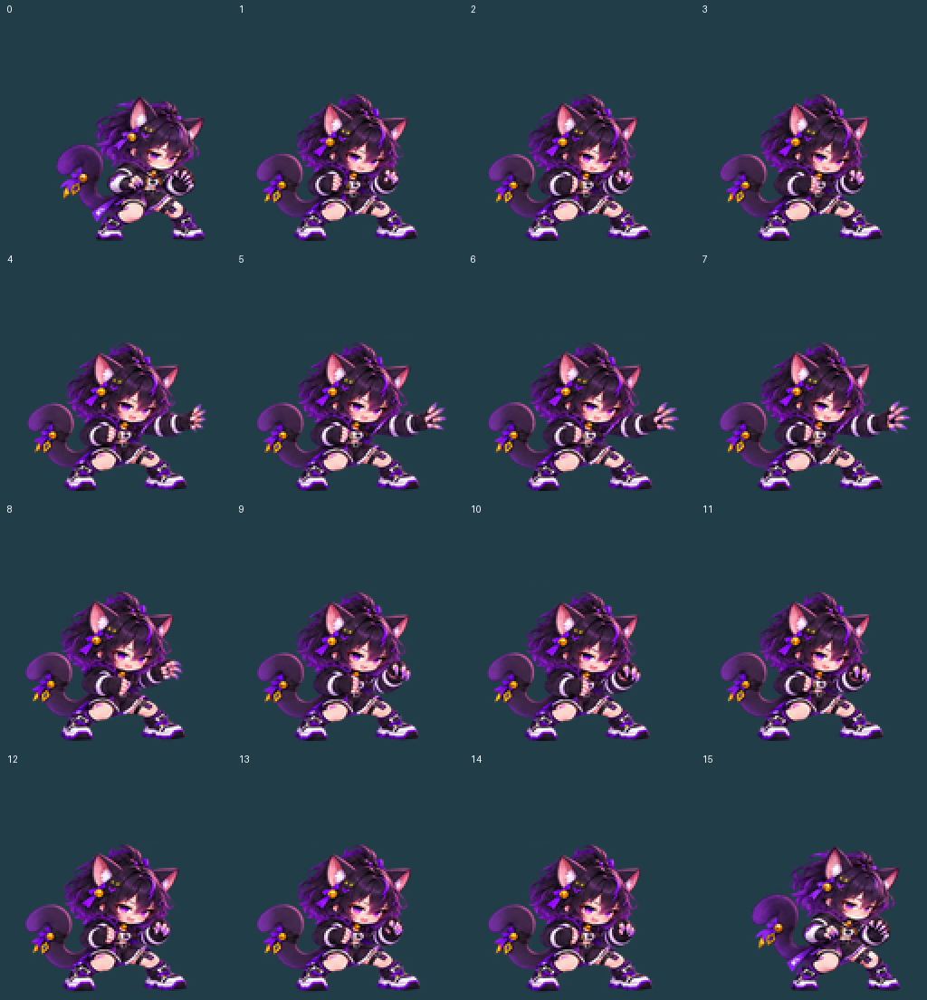
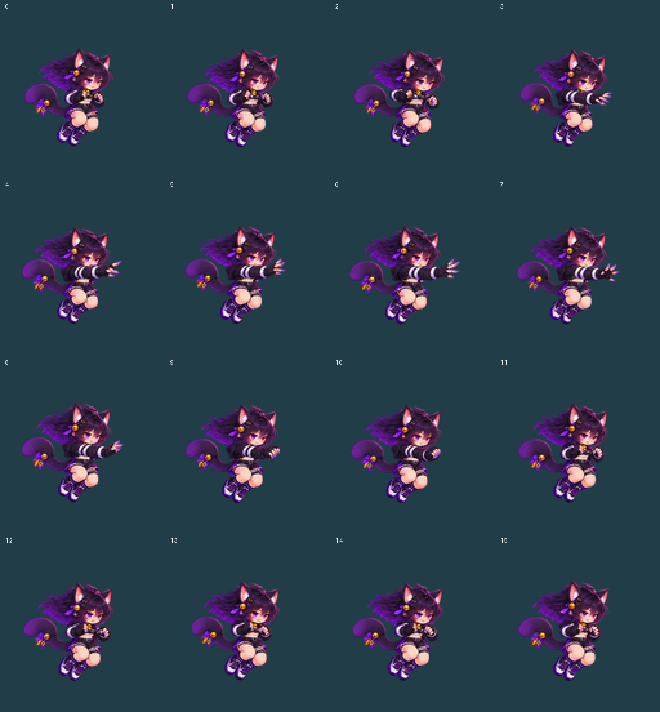

캐릭터 모션4개와 나비 대기 표시 보정1개는 검토 후보입니다. 모션별 채택 전 게임 자산으로 등록하지 않았습니다.
자현은 현재 승인된 대기·점프의 실제 모델을 입력으로 다시 제작했습니다. 나비는 대기 그림의 열마다 옆으로 밀리는 표시와 요요 진입 위치를 함께 맞췄습니다. 요요는 원형 조약돌 원반으로 바꾸고 자신의 축을 중심으로 회전합니다.
같은 좌표에서 기존 대기·점프27틱 → 요요 사용48틱 → 복귀24틱을 재생합니다. 전투·표시 코드를 실제 실행한 기록의 재현이며 게임 화면 캡처나 Android 기기 검증은 아닙니다. 공중 장면은 캐릭터를 따라가는 카메라로 표시합니다. 왼쪽 방향은 실제 facing=-1로 별도 실행했고 실·요요 위치와 회전 각도도 그 기록을 사용합니다.
양쪽 모두 현재 승인된 원본 PNG·16프레임·8FPS를 그대로 사용합니다. 왼쪽은 기존 표시, 오른쪽은 프레임별 body_root(몸의 표시 기준점)만 보정한 시안입니다. 노란 세로선은 첫 그림의 두 신발 중점입니다. 두 주기 재생으로 열마다 약10px씩 미끄러지던 이동을 비교합니다.



